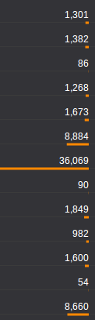

Weya.coffee is a lightweight library with no dependencies to generate DOM elements. We developed it to replace Coffeecup as a client side template engine. Because of its simplicity and performance, we are also using Weya to replace DOM manipulation of d3.js in data visualizations.
Weya.coffee
March 19, 2014
Here's a small example to show the usage.
userElems = []
Weya container, ->
@div ".users", ->
for user, i in users
userDiv = @div '.user', on: {click: editUser}, ->
name = @span ".name", user.name
@span ".phone", user.phone
if v.image?
@img src: user.image
userDiv.userId = i
userElems.push user: user, name: nameThe above code creates a list of users. It binds the data to the dom element userDiv.userId = i and also keeps track of all the DOM elements in userElems. This is important if you want to manipulate the DOM without reloading the entire user list, for example if a name of a user changes you could change it with userElems[changedUserId].name.textContent = changedUserName.
Is it a template engine?
Weya is quite similar to Coffeecup in terms of the syntax. But it's much faster, so it won't fail if you have lots of elements.
Also, Weya lets you register event handlers. I feel this is much cleaner than registering events later with CSS selectors, and it's easier to maintain the code since events are register within the DOM creation code.
Can it replace d3.js?
We use weya to replace most all the d3.js DOM manipulation.
Code with Weya is simpler, shorter and nicely intended. Here's the code that draws bar chart in this example.
Weya svg, ->
for d in data
@g ".g", transform: "translate(#{x0 d.State},0)", ->
for age in d.ages
@rect
width: x1.rangeBand()
x: x1 age.name
y: y age.value
height: height - y age.value
fill: color age.name
for d, i in ageNames.slice().reverse()
@g ".legend", transform: "translate(0,#{i * 20})", ->
@rect x: width - 18, width: 18, height: 18, fill: color d
@text
x: width - 24, y: 9, dy: ".35em"
style: {'text-anchor': "end"}, text: dHere's the code that does the same with d3.js.
var state = svg.selectAll(".state")
.data(data)
.enter().append("g")
.attr("class", "g")
.attr("transform", function(d) { return "translate(" + x0(d.State) + ",0)"; });
state.selectAll("rect")
.data(function(d) { return d.ages; })
.enter().append("rect")
.attr("width", x1.rangeBand())
.attr("x", function(d) { return x1(d.name); })
.attr("y", function(d) { return y(d.value); })
.attr("height", function(d) { return height - y(d.value); })
.style("fill", function(d) { return color(d.name); });
var legend = svg.selectAll(".legend")
.data(ageNames.slice().reverse())
.enter().append("g")
.attr("class", "legend")
.attr("transform", function(d, i) { return "translate(0," + i * 20 + ")"; });
legend.append("rect")
.attr("x", width - 18)
.attr("width", 18)
.attr("height", 18)
.style("fill", color);
legend.append("text")
.attr("x", width - 24)
.attr("y", 9)
.attr("dy", ".35em")
.style("text-anchor", "end")
.text(function(d) { return d; });Another problem we solved with Weya is that d3.js draws all the elements that are represented by the data at once. And with Weya we can draw progressively - this is quite useful when you have a lot of data and you don't won't the interface to go unresponsive until everything is drawn. Here's a small example to show the point.
i = 0
data = ...
draw = ->
return if i is data.length
d = data[i]
Weya container, ->
@div '.user', ->
...
i++
requestAnimationFrame draw
draw()The disadvantage of Weya over d3.js is that it doesn't bind data to DOM elements like d3.js does. So you can't use enter(), exit() and updates when data changes. But most users rarely need these features. We use Weya with our own data bindings with DOM elements (as in the first example with userElems), and we find it simpler than enter() and exit().
People who are really serious about software should write their libraries
February 19, 2014
We have been using a lot of tools and libraries in our software, and have replaced a number of them with our code. Libraries makes it easy to get things done, and to ship early. But from my experience, having a third-party library or a tool dominate a core part of your software is not a good idea.
People who are really serious about software should make their own hardware.
- Alan Kay
We have moved away from a number of libraries (and frameworks and platforms) over the last couple of years. This may sound like a lot of hate, but it is not so. We still love those libraries and use them on a lot of smaller projects. But when your product grows and you want to mold it the way you want, sometimes libraries stand in your way. Some of the decisions we made could be wrong because we didn't understand the library properly. But we spent a lot of time trying to stick to those libraries before replacing them.
Writing your code instead of using libraries takes a lot of weight off the product. Most of these libraries are written by really good programmers to be used in a wide range of scenarios, and there is a pretty good chance that you won't need them all. So getting inspiration from them and writing your own stuff will make the software lighter while making things work the way you want. A lot of programmers are likely to write their own code to replace libraries at some point, and that is probably why there are a number of libraries doing almost exact same thing in slightly different ways.
One of the traps you can fall into when writing our own code is that you might just end up reinventing the wheel. There is a chance that you replace a well written library with a small piece of code initially, but with time end up improving your code to do exactly the same thing the library you threw away did.
jqPlot
Our first release of Forestpin used jqPlot for most of our charts. Some not-so-ordinary visualizations were made with protovis1. jqPlot helped us quickly develop a product (MVP) to show potential customers, but introduced a lot of constraints. We made some changes to jqPlot to customize some of the charts, but it wasn't enough. The next version of Forestpin used d3.js for all the visualizations2, which gave us more control. We never used jqPlot any project, thereafter.
Backbone.js
Backbone was used at Forestpin as well as at nearby.lk. What triggered us to code a replacement for Backbone was that it didn't save states in HTML5 history3. We weren't using most of the features of Backbone too, so the replacement, Sweet.js, was much simpler. We plan on making Sweet.js independent from jQuery and Underscore.js, and also renaming it so that it doesn't get confused with Mozilla's Sweet.js.
Database
Forestpin Enterprise used a custom in-memory data store built ground up at Forestpin from the early days. The data store was a core part of the Forestpin product, and we gained a lot of performance by doing most of the calculations within the database itself.
jQuery Mobile
nearby.lk decided to drop jQuery mobile after an year with it. Adopting jQuery mobile was a bad decision. It was very heavy4 and was not developed to be used for apps like nearby.lk. jQuery mobile is super easy to be implemented for a web site with server generated HTML pages, but ours had a lot of dynamically generated pages and we spent quite sometime getting jQuery mobile to work.
Google App Engine
nearby.lk was hosted on Google App engine for an year and a half and we moved to Amazon5.
d3.js
At Forestpin, we use d3 for all our visualizations and some tables - whenever data is connected to the DOM. We also introduced CoffeeScript helpers to simplify D3.js DOM manipulation code.
We came across some requirements which were hard to tackle with D3.js. One was adding DOM elements progressively. For example, when you are drawing a matrix with a large number of small rectangles. if you draw all if it at once, the user will see nothing for a while and everything will appear at once. But it would have been more user friendly, if elements were added progressively. Then the user will see sets of rectangles appearing in short intervals, as if it was an intended animation. The total time for all rectangles to appear might be slightly longer, but the user will feel otherwise. We couldn't find a neat way to do this with D3.js.
Another problem was that we couldn't move a particular DOM element across parent elements easily. For instance, if you want to show controls like the action links beneath the focused tweet in the twitter timeline, you should either have hidden action links on each tweet. or redraw action links when the focus changes, or have the action links on a different layer and move it. The first two options are not efficient and the third is tricky. The easiest is to have a DOM element removed and inserted to the focused tweet when the focus changes. This option, although probably not as efficient as the third option, is simpler and faster than the first two6.
There were a few similar issues so we thought of going for native Javascript code for DOM manipulation, and wrote a small library with an interface similar to CoffeeScript helpers for d3.js. We will continue to use D3.js for scales, csv parsing, etc.
jQuery
jQuery is used for selectors, events and Ajax. The dependency on jQuery is becoming less and less. Using pure Javascript is not that complicated and it is much faster7.
Although we've been moving away from a lot of libraries and tools, there is still a number of libraries we use. We use them because they make the development process easier, but only as long as they don't constraint us from building what we want to build.
We stopped advertising on Facebook
December 30, 2013
Or, How to get Facebook "likes"?
nearby.lk stopped advertising on Facebook to get Facebook "likes", because we felt that it was a giant fruitless scheme of making Facebook rich. Most of the "likes" on Facebook are useless, they are basically random clicks, which adds no value to anybody, and you need to pay Facebook for that. By the way, this may not be the case with advertising for *Clicks to Website*, *Website Conversions*, etc. - I don't have experience with those.
We got on Facebook when one of our employees created a fan page for the company, which we later made our official page. Facebook advertising was important for us to get awareness and to build reputation - so that our clients know we are popular because a lot of people like us on Facebook.
It didn't take us long to realize that the first goal is never met because we got almost no traffic to nearby.lk from Facebook; it was way lower than the number of likes we were getting. What we expected was the other way around - lots people visiting the site and a few "liking" us. "Like" never meant like, it meant click. People who "liked" probably didn't even know what they clicked, so it didn't do any marketing for us. Also, more "likes" didn't mean that there was a large set of users who would see our updates, since most of these people have liked hundreds of pages.
Our second goal, building a reputation, a public available figure to show we are popular, was met. And it still works, because most people don't know how Facebook "likes" work. They believe we have a lot of likes because we have a great product and people like it. But there's absolutely no dwirelationship between the two.
State Department has spent $630,000 on Facebook1, 2.
"Many in the bureau criticize the advertising campaigns as ‘buying fans' who may have once clicked on an ad or ‘liked' a photo but have no real interest in the topic and have never engaged further," reads the Inspector General report.
At least they got their "likes" from homeland.
When we launched a prototype nearby.in with attractions in India, we advertised on Facebook targeting India. With a bit of research while doing that, we realized how most companies in Sri Lanka, which has almost nothing to do with foreign countries, get Facebook likes from countries other than Sri Lanka. They simply advertise targeting other countries, especially developing countries with large populations. And it is cheaper.
For instance the page FYI - Sri Lanka Mobile Directory probably, as its name implies, has nothing to do with Turkey.

Not all companies are stupid enough to let others see their likes are useless. They spread it among a number of countries, while putting a little extra advertising in homeland, so that the most popular country remains to be homeland. To see how they do it you need to go create an ad yourself.

So it's all about a race to get more likes, not creating a product that people like. And since these are not genuine likes, number of likes in Facebook becomes just a figure of how much money you can waste on Facebook; that is exchanging your money for Facebook "likes" which has no meaning.
Coffeescript helpers for d3.js
December 28, 2013
I write a lot of d3.js code and most dom manipulation code got complicated and hard to maintain. With fp.js attributes, styles and events can be set easily. But the most important fact is that FP.js lets you maintain indentation in coffescript code that matches the dom structure.
numbers = [5, 3, 23, 6, 7, 0, 1, 25, 11, 19, 20]
chartHeight = 300
chart = d3.select("body")
.append("svg")
.attr("width", "100%")
.attr("height", "100%")
bars = chart.selectAll("g.bar").data(numbers).enter()
.append("g")
.attr("class", "bar")
bars.append("rect")
.attr("y", (d) -> chartHeight - d * 10)
.attr("x", (d, i) -> i * 20)
.attr("width", 20)
.attr("height", (d) -> d * 10)
bars.append("line")
.attr("class", "budget")
.attr("y1", (d) -> chartHeight - d * 9)
.attr("y2", (d) -> chartHeight - d * 9)
.attr("x1", (d, i) -> i * 20)
.attr("x2", (d, i) -> i * 20 + 20)
.attr("stroke", (d) -> if d < 20 then "white" else "#aaa")Above is plain code to draw a simple bar chart with d3.js, and below is the code with FP.js.
numbers = [5, 3, 23, 6, 7, 0, 1, 25, 11, 19, 20]
chartHeight = 300
FP d3, 'select', 'body', ->
FP @, 'svg', width: "100%", height: "100%", ->
FP @, 'selectAll', 'g.bar', ->
FP @, 'data', numbers, ->
FP @, 'enter', ->
FP @, 'g.bar', ->
FP @, 'rect',
y: ((d) -> chartHeight - d * 10)
x: ((d, i) -> i * 20)
width: 20, height: ((d) -> d * 10)
FP @, 'line.budget',
y1: ((d) -> chartHeight - d * 9)
y2: ((d) -> chartHeight - d * 9)
x1: ((d, i) -> i * 20)
x2: ((d, i) -> i * 20 + 20)
stroke: ((d) -> if d < 20 then "white" else "#aaa")I am planning to remove the clutter of FP @, so that it'll look like the following; but for that I will have to either use `with` keyword or create functions for select, rect, line, etc, in a local context similar to coffeekup.
FP d3, ->
select 'body', ->
svg width: "100%", height: "100%", ->
selectAll 'g.bar', ->
data numbers, ->
enter ->
g '.bar', ->
rect
y: ((d) -> chartHeight - d * 10)
x: ((d, i) -> i * 20)
width: 20, height: ((d) -> d * 10)
line '.budget',
y1: ((d) -> chartHeight - d * 9)
y2: ((d) -> chartHeight - d * 9)
x1: ((d, i) -> i * 20)
x2: ((d, i) -> i * 20 + 20)
stroke: ((d) -> if d < 20 then "white" else "#aaa")Another option is to use @, which cleaner and not that messy, but code readers might get confused whether @ is referring to the object you are making the call from. Also, using a one letter name such as $ or _ for fp.js will give a similar code - $.rect, $.line, etc.
FP d3, ->
@select 'body', ->
@svg width: "100%", height: "100%", ->
@selectAll 'g.bar', ->
@data numbers, ->
@enter ->
@g '.bar', ->
@rect
y: ((d) -> chartHeight - d * 10)
x: ((d, i) -> i * 20)
width: 20, height: ((d) -> d * 10)
@line '.budget',
y1: ((d) -> chartHeight - d * 9)
y2: ((d) -> chartHeight - d * 9)
x1: ((d, i) -> i * 20)
x2: ((d, i) -> i * 20 + 20)
stroke: ((d) -> if d < 20 then "white" else "#aaa")Visualize data tables with variable length underlines
December 23, 2013
Underline doesn't take away space in a table or a list of data and by varying the length of the underline you can help readers scan much faster and get an idea of the data and its distribution without having to read each number.
List
The simplest and often the best way to show a list of numbesr is to simply list them.
However, if the reader is to find the largest value she might have to go through each number, especially if all of them have the same number of digits. Sorting by the value will help, but it doesn't work if it's on a table that is sorted by some other figure.
The line height of the list in the above figure can be reduced but a similar height can be found in most software, including spreadsheets and popular BI.
Bars
Adding a bar, like a horizontal bar chart, helps you clearly identify the largest value, as well as get an understanding of the distribution without having to go through the numbers.
But it's taking up a lot of space - at least another column width or more if you want to make it aesthetically pleasing. Another problem is that it might distract someone trying to read through the numbers; of course, choosing a more subtle color will help in that.
Displaying text over bars reduces the space, but it makes it lot harder to read the numbers.
Underline
Decreasing the height of the bar to a few pixels, or even a single pixel can still give the same effect as bars. Also, you can place them underneath the numbers so that it doesn't take up an extra column.
Right aligning the bars takes away the cluttered feeling. Again, choosing a more subtle color and/or reducing the thickness of the lines will help reduce the highlighting effect.
The scale could be linear or logarithmic. A small axis could be place at the column heading to stop readers from misinterpreting.



Another JS Framework
December 17, 2013
I started working on Sweet.js about a month ago. It is inspired by Backbone.js. Sweet.js supports HTML5 states, so that you don't have to go through work arounds like these. Sweet.js is not a MVC framework, but it has a views similar to Backbone.js, which supports inheritance without affecting events and initializations of super classes. And it's written in Coffeescript.
Router
class Router extends Sweet.Router
@routes #You can add more routes from sub classes
'': 'home'
'search/:what': 'results'
home: ->
View.home()
results: (what) ->
console.log @getState() #state
View.results(what)
router = new Router()
router.start pushState: true
#Emulate browser back button
router.back()
#Whether we can go back without leaving the web app
router.canBack()Views
A generic form class.
class Form extends Sweet.View
@events
'click .cancel': 'cancel'
'click .submit': 'submit'
@initialize (options) ->
@model = options.model
cancel: (e) ->
router.back()A registration form class.
class RegistrationForm extends Sweet.View
#Register new events without affecting events registered in Form class
@events
'click .checkUsername': checkUsername
#Both initialization functions (Form, RegistrationForm) will be called.
@initialize (options) ->
@userType = options.userType
submit: (e) ->
#Submit form
checkUsername: (e) ->
#Check availabilityThis is a very basic library and it will not suit you if you are looking for a MVC. I'm using this in some of my projects, so I will be maintaining it.
I'm planning to remove the dependency on jQuery and use vanilla javascript.